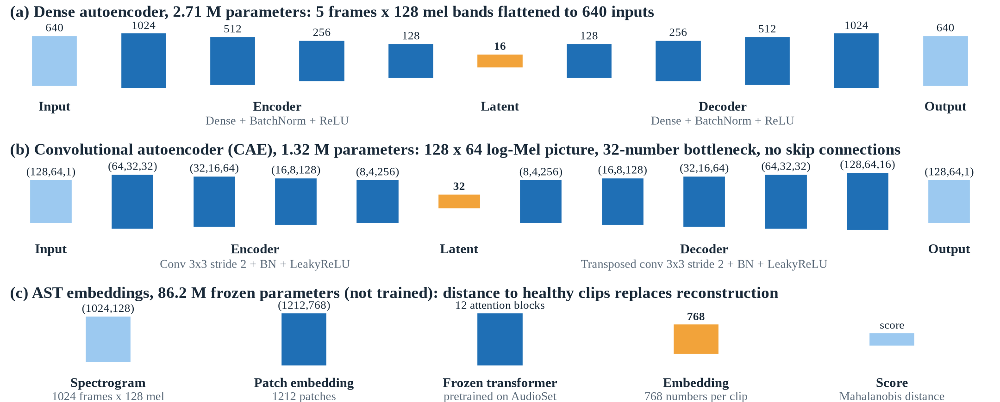
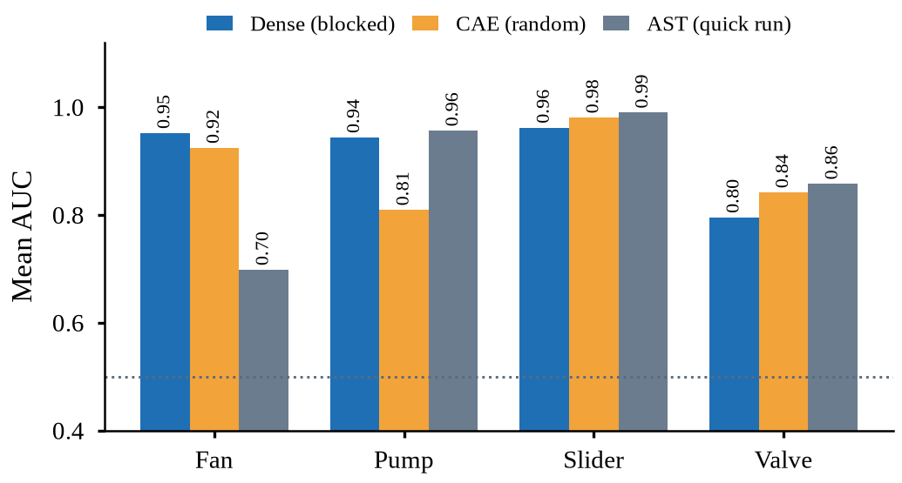
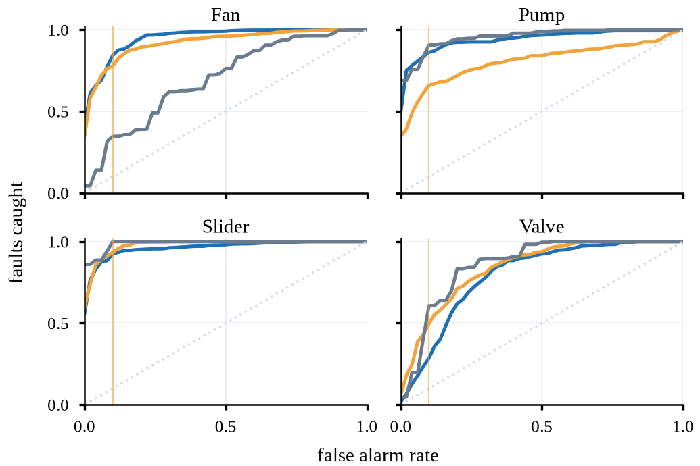
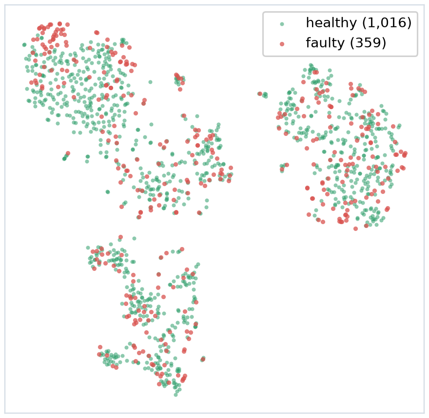

Unsupervised Acoustic Fault Detection on Industrial Machines: Dense, Convolutional and Pretrained-Embedding Models on MIMII
Aaditya Pyarla24BCS003
Raja Kumar24BSM050
Nirmal Kattady24BCS174
Deepak Choudhary24BSM018
Indian Institute of Information Technology, Design and Manufacturing, Jabalpur, India 17 November 2026
Abstract—Faults in industrial machines are rare and rarely labelled, so we study acoustic anomaly detection that trains on healthy sound only. On the MIMII dataset (fan, pump, slide rail and valve; four units each, 6 dB noise, 18,019 clips) we compare a dense autoencoder (2.71 M parameters), a convolutional autoencoder (CAE, 1.32 M) and frozen pretrained AST embeddings scored by Mahalanobis distance (86.2 M, not trained). The alarm threshold is the 95th percentile of healthy validation scores. Under a strict blocked split the dense autoencoder reaches a mean AUC of 0.913 (pAUC 0.791). The CAE (random split) reaches 0.889 and the embedding model (quick run, two units, random split) 0.875; on the eight runs they share, the three score 0.887, 0.836 and 0.875. Because the evaluation protocols differ, we claim no ranking. Valve faults stay hardest (recall at most 0.33 for every model), and the choice of data split matters as much as the architecture.
Index Terms—anomaly detection, autoencoder, MIMII, audio embeddings, evaluation protocol

Fig. 1. The three models, drawn from the implemented networks. Bar height grows with the number of values at that layer (log scale); labels give the tensor shape. Light blue: input and output; amber: bottleneck or embedding. (a) Dense autoencoder. (b) Convolutional autoencoder. (c) Frozen AST embedding with a distance score.
I. Introduction
Unplanned machine failures are costly, but labelled failure recordings are scarce and the next fault may not resemble earlier ones. One-class anomaly detection therefore learns what healthy sound looks like and flags deviations, never using faulty clips for training. In our data only 18% of clips are faulty: 4.5 healthy clips per faulty clip overall, and 8.2 and 7.7 for pump and valve. The MIMII baseline is a small dense autoencoder [1]; its average AUC at 6 dB is 0.816, against 0.844 for convolutional deep one-class networks [2]. The best DCASE 2020 systems add outlier exposure and reach 94.86% average AUC on the development set [3].
We ask whether (i) convolution, which respects the time–frequency layout that flattening discards, or (ii) pretrained embeddings, which avoid reconstruction altogether, improve on a simple dense baseline. Our contributions are a common pipeline for three architectures, an explicit comparison of random and blocked data splits, and an account of where each model fails.
II. Data and Preprocessing
MIMII [1], which we used through its Kaggle copy [8], holds 10 s, 16 kHz recordings of four machine types, seven units (IDs) each, with factory noise mixed in at three signal-to-noise ratios. We use IDs 00, 02, 04 and 06, the 6 dB condition and microphone 1 of 8: 18,019 clips (14,719 healthy, 3,300 faulty), 56% of the 32,157 clips at one noise level. Each clip is cut into 2.05 s windows with 50% overlap and converted to a 128×64 log-Mel picture (FFT 1024, hop 512, 128 bands). Healthy clips are split 70/10/20% into train, validation and test sets by clip, before windowing; all faulty clips go to the test set. Scaling constants come from the training set only.
Two split modes are used. A random split draws clips at random. A blocked split cuts clips in file order (first 70% train, next 10% validation, last 20% test). We assume, without having verified it, that file order follows recording time, so that blocked testing separates recording sessions.
III. Models
A. Dense autoencoder.
Five consecutive frames (5×128 = 640 values, each band standardised) pass through dense layers 1024–512–256–128–16 and back (BatchNorm, ReLU), 2.71 M parameters (Fig. 1a). Flattening treats neighbouring bands and frames as unrelated inputs, and the model sees only about 0.2 s at a time.
B. Convolutional autoencoder.
Following the project specification, four stride-2 convolution blocks (32–256 filters; BatchNorm, LeakyReLU 0.2) feed a 32-unit dense bottleneck, mirrored by four transposed-convolution blocks and a sigmoid output (1.32 M parameters, no skip connections; Fig. 1b; our notebook: [9]). Inputs are min-max scaled and training uses ±2 dB random gain. Shared filters should capture local patterns anywhere in the picture with fewer parameters.
C. AST embeddings.
A frozen Audio Spectrogram Transformer [4] pretrained on AudioSet (our notebook: [10]) turns each clip into a 768-number pooled embedding (Fig. 1c). The anomaly score is the Mahalanobis distance to the healthy training embeddings, with a Ledoit–Wolf shrinkage covariance [5] because a few hundred healthy clips must cover 768 dimensions. Nothing is trained, and the headline configuration (pooled embedding, Mahalanobis) was fixed before running. The model avoids reconstruction, and with it the risk that an autoencoder rebuilds faults almost as well as healthy sound.
D. Training and scoring.
The autoencoders use Adam (10−3) with early stopping (patience 10) on validation loss, capped at 100 epochs (dense) and 60 (CAE). A window's score is its mean squared error and a clip's score is the mean over its windows. For every model the alarm threshold is the 95th percentile of healthy validation clip scores, so about 5% of healthy clips raise a false alarm by design; faulty clips never influence it.
IV. Evaluation Protocol
We report AUC, partial AUC (pAUC, false-alarm rate up to 0.1, standardised so that 0.5 is chance [6]) and, at the threshold, recall, false-alarm rate and balanced accuracy. The dense model was tested with the blocked split (16 runs: 4 machines×4 IDs). The CAE used a random split (16 runs). The AST model is a quick run on IDs 00 and 02 with at most 150 clips per class and a random split (8 runs). The results are therefore not like for like.
V. Results
Table I. Mean results over runs (6 dB)
Model
Split
Runs
AUC
pAUC
Bal. acc.
Recall
False al.
Dense AE
blocked
16
0.913
0.791
0.769
0.644
10.6%
CAE
random
16
0.889
0.776
0.781
0.621
5.9%
AST (quick)
random
8
0.875
0.742
0.760
0.629
10.8%
Published AE [2]
paper
all IDs
0.816
–
–
–
–
Blocked = strict split. Recall and false alarm at the 95th-percentile threshold. Same eight runs (IDs 00 and 02): dense 0.887, AST 0.875, CAE 0.836, published 0.786 (AUC).
Under the strictest protocol the dense autoencoder obtains the highest mean AUC (0.913) and pAUC (0.791), above the published baseline. The CAE has the best balanced accuracy (0.781) and fewest false alarms (5.9%), but a lower AUC (0.889) even on an easier split. On the eight runs shared by all models the mean AUC is 0.887 (dense), 0.875 (AST) and 0.836 (CAE), against 0.786 for the published baseline.

Fig. 2. Mean AUC per machine. The split used by each model is shown in the legend; the AST bars cover IDs 00 and 02 only. The dotted line is chance.
Per machine (Fig. 2), all models separate slider almost perfectly (0.96–0.99). AST is strongest on pump (0.956 versus 0.944 dense and 0.809 CAE) but weakest on fan (0.698), where fan ID 00 gives only 0.56. Valve is hardest for every model: recall at the threshold is 0.20 (dense), 0.33 (CAE) and 0.20 (AST), and the dense model misses 80% of valve faults. The ROC curves (Fig. 3) approach the diagonal at low false-alarm rates on valve. The dense model also flags 24% of healthy pump clips.

Fig. 3. ROC curves per machine, averaged over runs: dense (blue), CAE (amber), AST (grey). The thin vertical line marks the 10% false-alarm limit of the pAUC.
VI. Discussion and Limitations
Neither convolution nor pretrained embeddings clearly improved on the dense baseline, and we did not test why. Plausible but untested factors are: (i) the CAE reached its 60-epoch cap in all 16 runs, so early stopping never fired and it may be undertrained; (ii) the CAE uses one global min-max range whereas the dense model standardises each band; (iii) the dense model scores many short groups of frames, which may expose short events that a 32-number bottleneck over a 2 s picture averages away, a possible reason for the low valve recall.

Fig. 4. t-SNE [7] of AST embeddings of fan ID 02 (local recordings, 1,375 clips). Faulty clips (red) lie inside the healthy cloud (green), in line with the weak AST result on fan. Three clusters appear whose cause we have not identified, so the plot is illustrative only.
The main limitation is the unequal protocol: only the dense model used a blocked split. Random splits can leak recording sessions. In a supervised CNN experiment [11], which uses faulty labels and so lies outside the healthy-only setting, balanced accuracy fell from 0.86 (random) to 0.71 (blocked) in quick runs, and one valve unit scored an AUC of 0.02, far below chance. We also used 4 of 7 units, one noise level, a single seed, and measured no latency.
VII. Conclusion
A simple dense autoencoder is a strong baseline for acoustic fault detection on MIMII: 0.913 mean AUC under a strict blocked split. In our runs neither a convolutional autoencoder nor frozen AST embeddings gave a clear gain, although unequal protocols confound the comparison, and valve faults remain unsolved. Next steps are to re-run the CAE and AST models with blocked splits on all units, then to test recurrent and attention-based models, fine-tuned pretrained audio models and outlier exposure [3], and to score by the worst windows instead of their average. All code, notebooks and results are in the project repository [12].
References
H. Purohit et al., “MIMII dataset: Sound dataset for malfunctioning industrial machine investigation and inspection,” in Proc. DCASE Workshop, 2019, arXiv:1909.09347.
“Audio-based anomaly detection in industrial machines using deep one-class support vector data description,” arXiv:2412.10792, 2024.
Y. Zhang et al., “Outlier-aware inlier modeling and multi-scale scoring for anomalous sound detection via multitask learning,” in Proc. Interspeech, 2023, arXiv:2309.07500.
Y. Gong, Y.-A. Chung and J. Glass, “AST: Audio Spectrogram Transformer,” in Proc. Interspeech, 2021.
O. Ledoit and M. Wolf, “A well-conditioned estimator for large-dimensional covariance matrices,” J. Multivariate Anal., vol. 88, no. 2, 2004.
D. K. McClish, “Analyzing a portion of the ROC curve,” Med. Decis. Making, vol. 9, no. 3, 1989.
L. van der Maaten and G. Hinton, “Visualizing data using t-SNE,” J. Mach. Learn. Res., vol. 9, 2008.